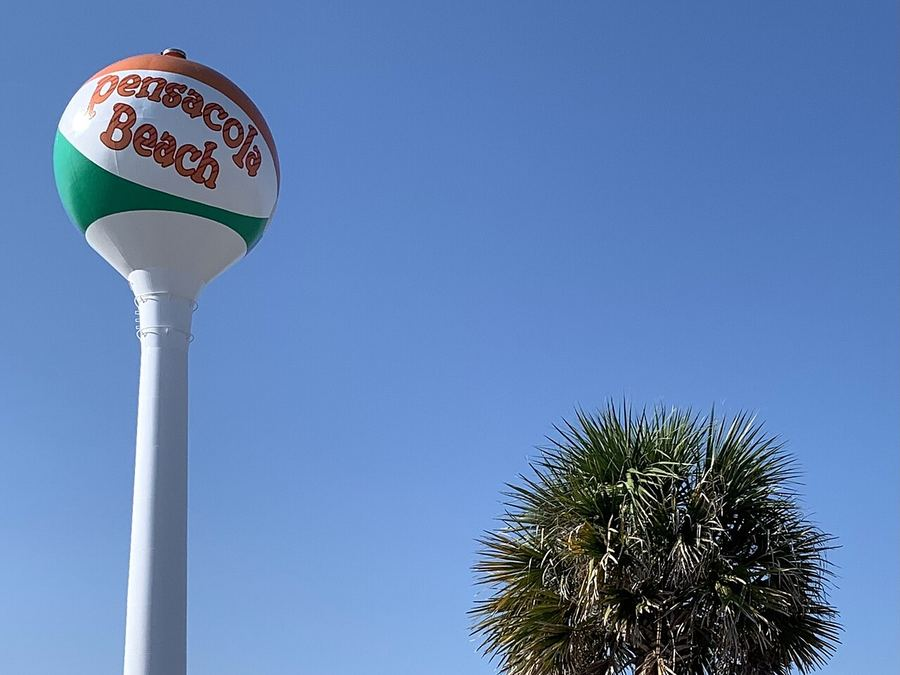
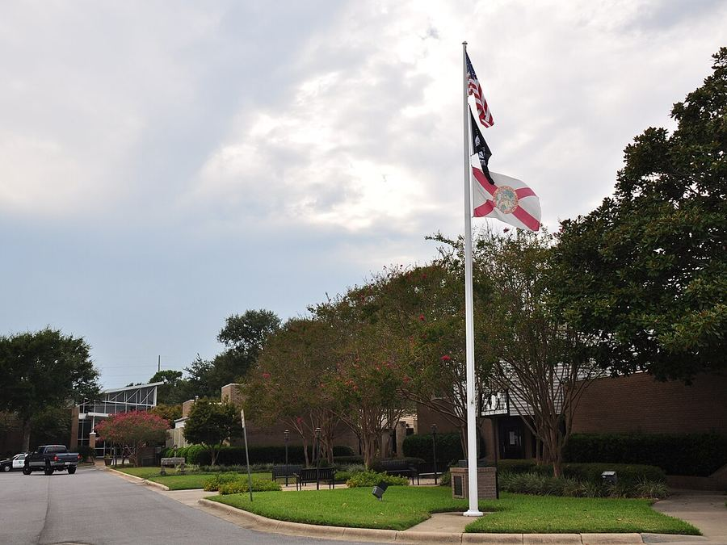
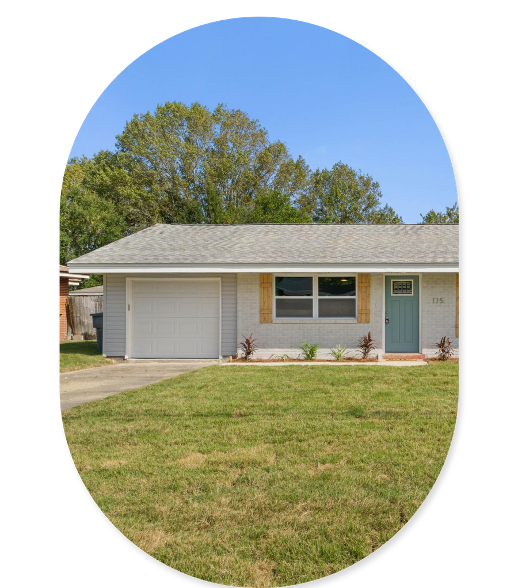

It never asks what is actually going on. Probate half finished, a payment behind, a tenant who stopped paying, a date you have to be out by. Tell us the real situation and Jared and the team will come back with a real number on the property.
Reproduced as written, names as the reviewers gave them. The rating comes from JNL's Google listing, where every review is public and you can read all of them.
JNL Solutions went above and beyond to close my mother's house in one month. Jared was accommodating and sensitive to my situation of selling my childhood home after my mother's passing.
I had a seller that was in a must sell situation and could not afford to fix her house up in order to sell. I contacted Jared at JNL Solutions and he was able to purchase my seller's home at a very reasonable price within just a few weeks. Jared was able to close on her house within 2 weeks without any issues.
As a licensed Residential Contractor, he ensures that no corners are cut in his remodels. Jared's dedication to his craft is truly admirable and it shows in the quality of his work.
We needed to sell our condo quickly due to health reasons and JNL Solutions came through for us. Thanks to each of you for all your efforts and the above and beyond assistance you provided to us.
He caters each deal to meet the seller's unique needs, whether it be someone who inherited a dated property from a loved one, or a seller who can no longer maintain the property.
For an investor, he is straightforward and doesn't hide any punches. He's honest and will let you know exactly what his goals are and what he needs.
Working with Jared and his associates at JNL Solutions was the best real estate experience we have had in 30+ years. They were straightforward, honest, and professional, a unique experience in today's world. Highly recommended!
I was in a position where I needed to sell my house. My son reached out to Jared Larimer. He came and looked at the house and made us an offer. It was a very simple process. Jared even helped me find another house to move into.
Ive bought and sold many homes in the past, this was an absolute seamless transaction. Jerad was professional, offered a great price and closed quickly on my grandmothers home. All of the worries and issues we thought would happen, didn't.
These guys came out and bought a nuisance house in my neighborhood. Jared showed up and cleared them out, demoed the house, and cleaned up the lot. Thank you for helping make our neighborhood safer.
Heather and Jared accommodated our times not theirs. It was a pleasure to work with them, answered all our questions and more, very informative.
Jared bought my house and was very helpful every step of the way and he was easy to talk to. He listened to all my questions and concerns, I encourage anyone to work with him.
Hover to hold one still, or drag to move through them. All of these are public on JNL's Google listing.
An inherited house that is also heading for auction. A rental that needs a new roof. A divorce with a payment already behind. Those combinations are the norm, and they are exactly what a "get your cash offer" form cannot handle. Tick everything that applies.
JNL is based on Eglin Parkway in Fort Walton Beach. These are the towns we buy in most, and anywhere else in Florida is still worth a call.


About two minutes. No account, no credit check, nothing pulled on your property.
A real person, usually the same day. We go through the property with you and what it would actually pay you.
Twenty minutes, in person or on video. No cleaning, no staging, no strangers through the house.
What we would pay, what it nets you, and the date you would close on. Then you decide, or you do not.
This one is ours. Ordinary Panhandle brick ranch, bought from an owner who did not want to take the work on, renovated and back in use. You do not have to clean it, clear it, fix it or show it. Take what you want out of it and leave the rest where it is.

These are the ones that come up most, and most callers tick two or three of them rather than one.
Probate part-finished, three siblings with three opinions, and a house still full of forty years of belongings.
Missed payments, a notice of default, an auction date, back taxes or a lien. The options narrow every week.
Roof, foundation, fire or water damage, or years of clutter. No bank will lend on it and no agent will list it.
A tenant behind on rent, an eviction half-started, repairs stacking up, and you live three states away.
A job, a divorce, a care move, or a house you are already under contract to buy.
Nothing is wrong. You want to know what it is worth, and what selling as it stands would actually net you against listing it.
The combinations are where it gets useful. An inherited house heading for auction is a different problem from either one on its own, because probate does not pause for the foreclosure calendar. Tick both and the questions, and the answer, change accordingly.
What your house is actually worth to you once the costs are taken out, written for people in a situation rather than people browsing.
Work out your own numbers before anybody quotes you one.
No. It is not a listing agreement, not a contract, and not a commitment to sell. You can go through the whole thing, read what we send you, and never speak to us again.
Our number sits below what a perfect retail sale would fetch and we will say so plainly. What you are trading for that is certainty, no repairs, no showings, and a closing date you choose. What we will not do is quote a high number to get a contract signed and then chip away at it before closing. If listing would genuinely pay you more, we will tell you.
From us, nothing. No commission, no fees, and we cover the closing costs. The number we agree is the number at closing. That is the whole point of doing it this way, and it is the fair way to compare us against a listing, where the costs come off the top.
That does not end the conversation, but it does change what is realistic, so tell us the approximate balance early. There are cases where the honest answer is that selling is not your best move, and we will tell you that rather than let you find out weeks later.
No. Take what you want and leave the rest, including furniture, cars, and whatever is in the garage. We deal with it after closing. This comes up most with inherited properties and it is never a problem.
As little as seven days when there is a reason to move that quickly, and slower whenever you would rather it were slower. You pick the date. If you need to stay in the house for a few weeks after closing, say so on the call rather than at the end.
Not yet. While you are under a listing agreement we stay out of it, both out of courtesy and because depending on your contract it can create a problem for you. Come back if the listing expires.
The Florida Panhandle: Fort Walton Beach, Crestview, Destin, Navarre, Niceville and Pensacola, and the towns around them. If your property is elsewhere in Florida, tell us anyway and we will say straight away whether we can help rather than string it out.
About two minutes of questions, and the team comes back to you with a real number on the property. No obligation, and no commitment to sell.